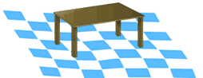
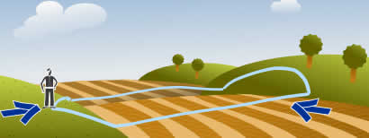
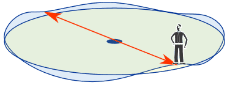

Intermediate Value Theorem
The idea behind the Intermediate Value Theorem is this:

When we have two points connected by a continuous curve:
- one point below the line
- the other point above the line
... then there will be at least one place where the curve crosses the line!
Well of course we must cross the line to get from A to B!
Now that you know the idea, let's look more closely at the details.
Continuous
The curve must be continuous ... no gaps or jumps in it.
Continuous is a special term with an exact definition in calculus, but here we will use this simplified definition:
we can draw it without lifting our pen from the paper
More Formal
Here is the Intermediate Value Theorem stated more formally:

When:
- The curve is the function y = f(x),
- which is continuous on the interval [a, b],
- and w is a number between f(a) and f(b),
Then ...
... there must be at least one value c within [a, b] such that f(c) = w
In other words the function y = f(x) at some point must be w = f(c)
Notice that:
- w is between f(a) and f(b), which leads to ...
- c must be between a and b
At Least One

It also says "at least one value c", which means we could have more.
Here, for example, are 3 points where f(x)=w:
How Is This Useful?
Whenever we can show that:
- there is a point above some line
- and a point below that line, and
- that the curve is continuous,
we can then safely say "yes, there is a value somewhere in between that is on the line".
Example: is there a solution to x5 - 2x3 - 2 = 0 between x=0 and x=2?
At x=0:
05 - 2 × 03 - 2 = -2
At x=2:
25 - 2 × 23 - 2 = 14
Now we know:
- at x=0, the curve is below zero
- at x=2, the curve is above zero
And, being a polynomial, the curve will be continuous,
so somewhere in between the curve must cross through y=0
Yes, there is a solution to x5 - 2x3 - 2 = 0 in the interval [0, 2]
An Interesting Thing!
The Intermediate Value Theorem Can Fix a Wobbly Table
|  | If your table is wobbly because of uneven ground ... ... just rotate the table to fix it! The ground must be continuous (no steps such as poorly laid tiles). |
Why does this work?
We can always have 3 legs on the ground, it is the 4th leg that is the trouble.
Imagine we are rotating the table, and the 4th leg could somehow go into the ground (like sand):
- at some point it will be above the ground
- at another point it will be below the ground
So there must be some point where the 4th leg perfectly touches the ground and the table won't wobble.
(The famous Martin Gardner wrote about this in Scientific American. There is also a very complicated proof somewhere).
Another One

At some point during a round-trip you will be
exactly as high
as where you started.
(It only works if you don't start at the highest or lowest point.)
The idea is:
- at some point you will be higher than where you started
- at another point you will be lower than where you started
So there must be a point in between where you are exactly as high as where you started.
Oh, and your path must be continuous, no disappearing and reappearing somewhere else.
The same thing happens with temperature, pressure, and so on.
And There's More!
If you follow a circular path ... somewhere on that circle there will be points that are:
- directly opposite each other
- and at the same height!

two points that are
directly opposite and at same height
Can you think of more examples?